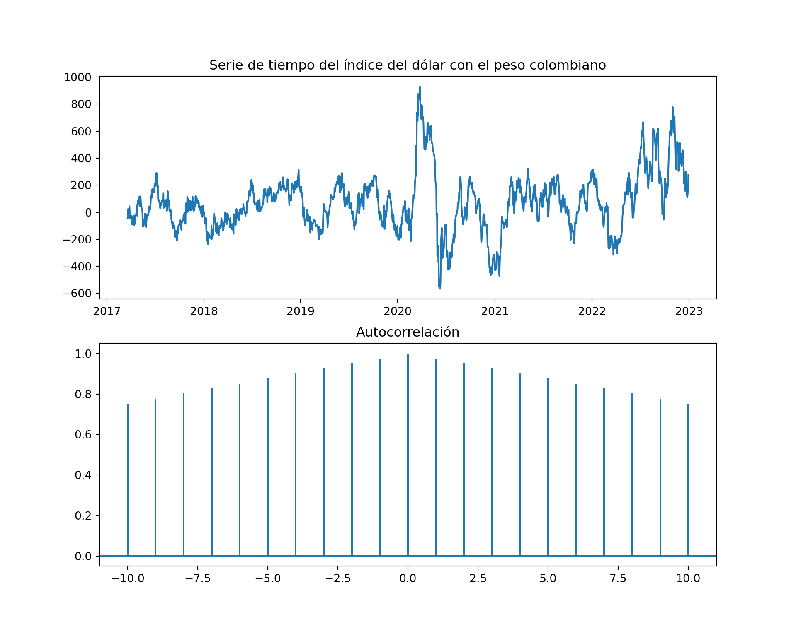
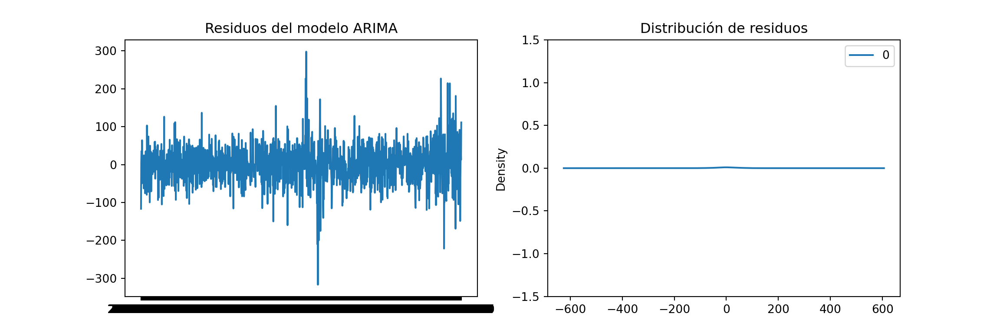
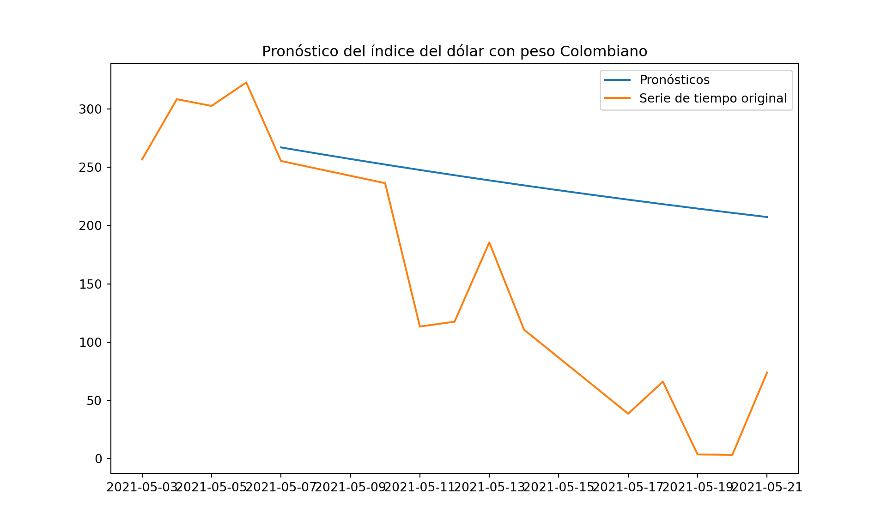

Capitulo 8 Metodología Box-Jenkins
Paso 0: Verificar que la serie se vuelva estacionaria para aplicar modelo ARIMA correctamente. Para verificar que es estacionaria usamos prueba AD Fuller
from statsmodels.tsa.stattools import adfuller
data['valor_diferenciado'] = data['Close'].diff(55)
copydata = data.dropna()
resultado_adf = adfuller(copydata['valor_diferenciado'])
print('Estadísticas de la prueba ADF:')## Estadísticas de la prueba ADF:print('Valor de la estadística de prueba:', resultado_adf[0])## Valor de la estadística de prueba: -4.591829862369242print('Valor p - Umbral menor a 0.05:', resultado_adf[1])## Valor p - Umbral menor a 0.05: 0.00013372340263588406Nuestra diferenciación se aplicaría a 55 periodos
Paso 1: Identificación - Gráficos de autocorrelación y autocorrelación parcial ACF y PACF.
import matplotlib.pyplot as plt
from statsmodels.graphics.tsaplots import plot_acf
fig, ax = plt.subplots(2, 1, figsize=(10, 8))
ax[0].plot(copydata["valor_diferenciado"])
ax[0].set_title('Serie de tiempo del índice del dólar con el peso colombiano')
ax[1].acorr(copydata["valor_diferenciado"], maxlags=10)## (array([-10, -9, -8, -7, -6, -5, -4, -3, -2, -1, 0, 1, 2,
## 3, 4, 5, 6, 7, 8, 9, 10]), array([0.75273421, 0.77763472, 0.80322799, 0.82740277, 0.85119328,
## 0.87748079, 0.90424636, 0.92843302, 0.95371696, 0.97590483,
## 1. , 0.97590483, 0.95371696, 0.92843302, 0.90424636,
## 0.87748079, 0.85119328, 0.82740277, 0.80322799, 0.77763472,
## 0.75273421]), <matplotlib.collections.LineCollection object at 0x000001F486BDD850>, <matplotlib.lines.Line2D object at 0x000001F486BDDF10>)ax[1].set_title('Autocorrelación')
plt.show() De acuerdo al gráfico anterior dejaremos autocorrelación y media movil en 1 porque es el que más se acerca a 1 o la autocorrelación más fuerte.
Paso 2: Estimación - Ajustar un modelo ARIMA
from statsmodels.tsa.arima.model import ARIMA
# copydata = copydata.set_index("Date")
copydata= copydata.to_period('D')
model = ARIMA(copydata["valor_diferenciado"], order=(1, 0, 1))
model_fit = model.fit()Paso 3: Diagnóstico - Verificar los residuos del modelo
residuals = pd.Series(model_fit.resid)
fig, ax = plt.subplots(1, 2, figsize=(12, 4))
residuals = residuals.reset_index()
residuals["Date"] = residuals["Date"].astype("str")
residuals=residuals.set_index("Date")
ax[0].plot(residuals)
ax[0].set_title('Residuos del modelo ARIMA')
ax[1].set(ylim=(-1.5, 1.5))## [(-1.5, 1.5)]ax[1].set_title('Distribución de residuos')
residuals.plot(kind='kde', ax=ax[1])
plt.show()
No se evidencia patrones o tendencia en los residuos permitiendo validar el primer supuesto y su media parece estar cercana a 0. Sin embargo, la distribución de los residuos no es normal, lo que indica que el modelo no captura adecuadamente la estructura de la serie. De igual manera realizamos el pronóstico para comparar
Paso 4 Pronóstico - Generar pronósticos futuros
forecast = model_fit.forecast(steps=15)
forecast = forecast.reset_index()
forecast["index"] = forecast["index"].dt.to_timestamp()
forecast = forecast.set_index("index")
real = copydata.reset_index()
real["Date"] = real["Date"].dt.to_timestamp()
real = real[(real["Date"] > "2021-05-01") & (real["Date"] < "2021-05-22")][["valor_diferenciado", "Date"]]
real = real.set_index("Date")
plt.figure(figsize=(10, 6))
plt.plot(forecast, label='Pronósticos')
plt.plot(real, label='Serie de tiempo original')
plt.title('Pronóstico del índice del dólar con peso Colombiano')
plt.legend()
plt.show() La proyección tampoco se ajusta mucho a la serie de tiempo. En conclusión, al igual que el metodo Holt-Winter, el resultado es una linea de tendencia recta y necesitamos una opción que logre predecir mejor los cambios, allí aplicaremos metricas como RSME.